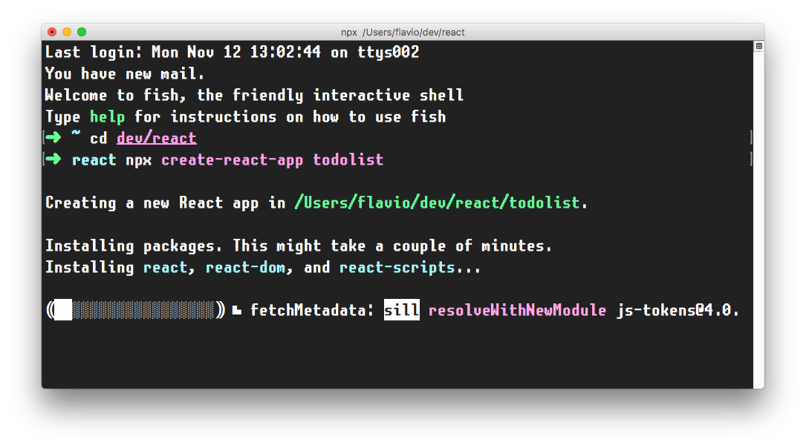
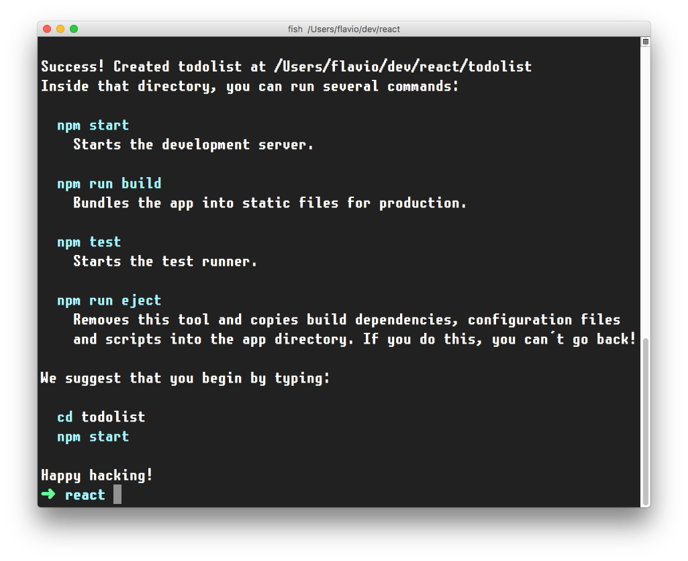
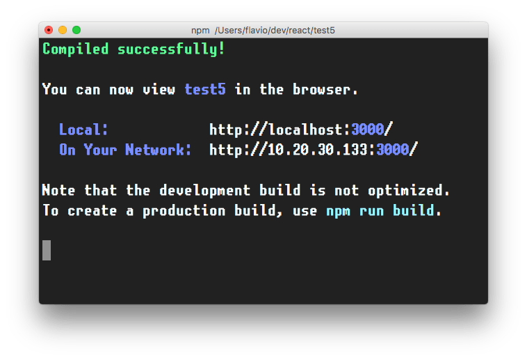
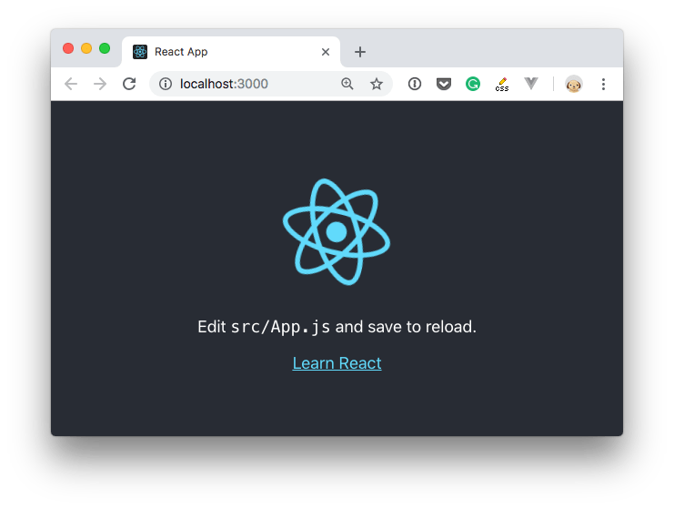
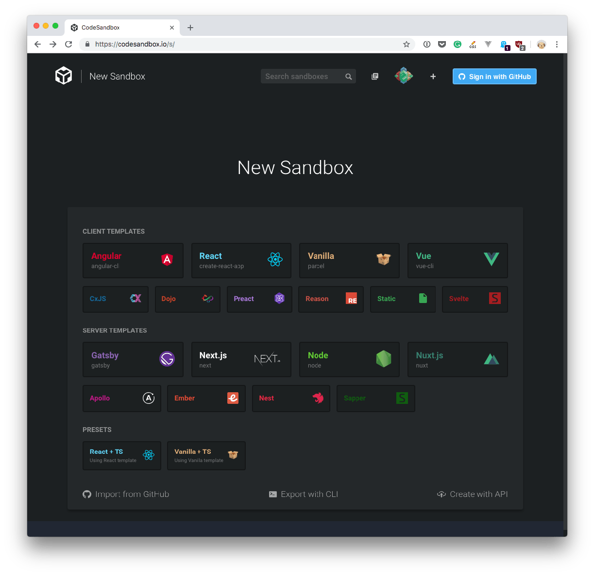

How do you install React?
React is a library, so saying install might sound a bit weird. Maybe setup is a better word, but you get the concept.
There are various ways to setup React so that it can be used on your app or site.
The simplest one is to add the React JavaScript file into the page directly. This is best when your React app will interact with the elements present on a single page, and not actually controls the whole navigation aspect.
In this case, you add 2 script tags to the end of the body tag:
<html>
...
<body>
...
<script
src="https://cdnjs.cloudflare.com/ajax/libs/react/16.7.0-alpha.2/umd/react.development.js"
crossorigin
></script>
<script
src="https://cdnjs.cloudflare.com/ajax/libs/react-dom/16.7.0-alpha.2/umd/react-dom.production.min.js"
crossorigin
></script>
</body>
</html>
The
16.7.0-alpha.2version in the links points to the latest Alpha of 16.7 (at the time of writing), which has Hooks available. Please change it to the latest version of React that is available.
Here we loaded both React and React DOM. Why 2 libraries? Because React is 100% independent from the browser and can be used outside it (for example on Mobile devices with React Native). Hence the need for React DOM, to add the wrappers for the browser.
After those tags you can load your JavaScript files that use React, or even inline JavaScript in a script tag:
<script src="app.js"></script>
<!-- or -->
<script>
//my app
</script>
To use JSX you need an extra step: load Babel
<script src="https://unpkg.com/babel-standalone@6/babel.min.js"></script>
and load your scripts with the special text/babel MIME type:
<script src="app.js" type="text/babel"></script>
Now you can add JSX in your app.js file:
const Button = () => {
return <button>Click me!</button>
}
ReactDOM.render(<Button />, document.getElementById('root'))
Check out this simple Glitch example: https://glitch.com/edit/#!/react-example-inline-jsx?path=script.js
Starting in this way with script tags is good for building prototypes and enables a quick start without having to set up a complex workflow.
create-react-app is a project aimed at getting you up to speed with React in no time, and any React app that needs to outgrow a single page will find that create-react-app meets that need.
You start by using npx, which is an easy way to download and execute Node.js commands without installing them. npx comes with npm (since version 5.2) and if you don't have npm installed already, do it now from https://nodejs.org (npm is installed with Node).
If you are unsure which version of npm you have, run npm -v to check if you need to update.
Tip: check out my OSX terminal tutorial at https://flaviocopes.com/macos-terminal/ if you're unfamiliar with using the terminal, applies to Linux as well - I'm sorry but I don't have a tutorial for Windows at the moment, but Google is your friend.
When you run npx create-react-app <app-name>, npx is going to download the most recent create-react-app release, run it, and then remove it from your system. This is great because you will never have an outdated version on your system, and every time you run it, you're getting the latest and greatest code available.
Let's start then:
npx create-react-app todolist

This is when it finished running:

create-react-app created a files structure in the folder you told (todolist in this case), and initialized a Git repository.
It also added a few commands in the package.json file, so you can immediately start the app by going into the folder and run npm start.


In addition to npm start, create-react-app added a few other commands:
npm run build: to build the React application files in the build folder, ready to be deployed to a servernpm test: to run the testing suite using Jestnpm eject: to eject from create-react-appEjecting is the act of deciding that create-react-app has done enough for you, but you want to do more than what it allows.
Since create-react-app is a set of common denominator conventions and a limited amount of options, it's probable that at some point your needs will demand something unique that outgrows the capabilities of create-react-app.
When you eject, you lose the ability of automatic updates but you gain more flexibility in the Babel and Webpack configuration.
When you eject the action is irreversible. You will get 2 new folders in your application directory, config and scripts. Those contain the configurations - and now you can start editing them.
If you already have a React app installed using an older version of React, first check the version by adding
console.log(React.version)in your app, then you can update by runningyarn add react@16.7, and yarn will prompt you to update (choose the latest version available). Repeat foryarn add react-dom@16.7(change "16.7" with whatever is the newest version of React at the moment)
An easy way to have the create-react-app structure, without installing it, is to go to https://codesandbox.io/s and choose "React".

CodeSandbox is a great way to start a React project without having to install it locally.
Another great solution is Codepen.
You can use this Codepen starter project which already comes pre-configured with React, with support for Hooks: https://codepen.io/flaviocopes/pen/VqeaxB
Codepen "pens" are great for quick projects with one JavaScript file, while "projects" are great for projects with multiple files, like the ones we'll use the most when building React apps.
One thing to note is that in Codepen, due to how it works internally, you don't use the regular ES Modules import syntax, but rather to import for example useState, you use
const { useState } = React
and not
import { useState } from 'react'